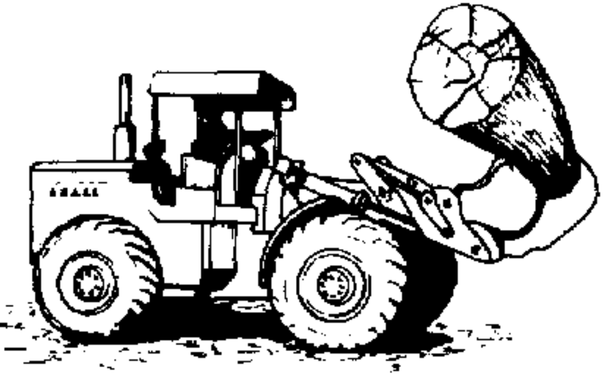
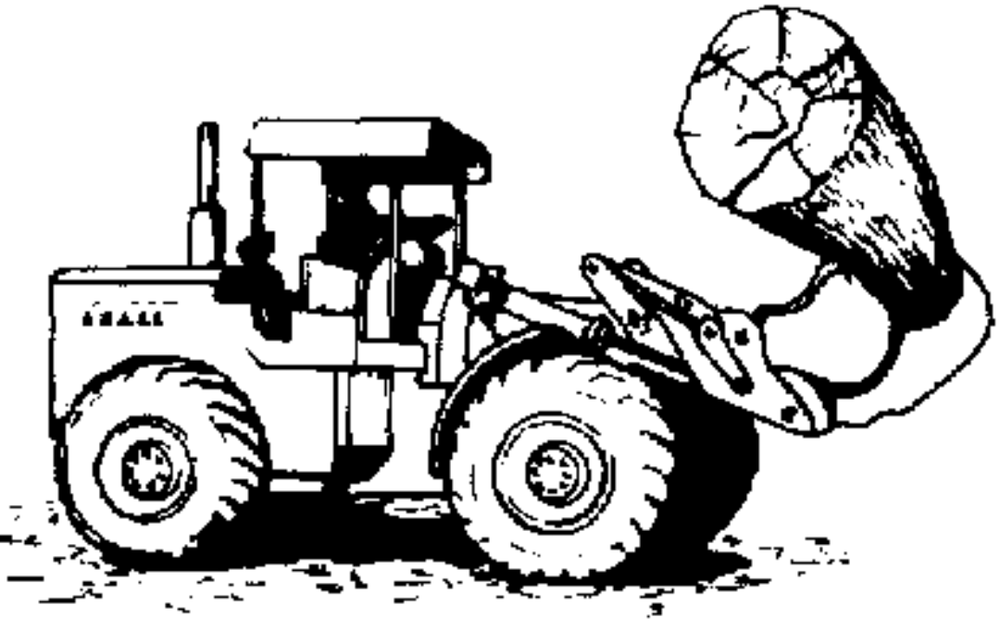

Myanmar is one of the world's most thickly forested countries but its forests are threatened by neighbours such as China and Thailand as well as Myanmar cronies and generals anxious to enrich themselves. Accourding to the environmental group Global Witness, "Burma is resource rich but surrounded by resource- hungry nations and this regime has used this fully to its advantage". Large swaths of virgin rainforests has been cleared by Chinese logging companies, the military regime and insurgent groups to make money earned from selling timber to fight the regime, who in turn uses money earned from selling timber to fight the ethnic insurgents.
Myanmar has one of the world's highest deforestation rates. Between 1990 and 2005, Myanmar lost an average of 466,000 hectares of forest per year-or 18 percent of its total forest cover during that period. The deforestation rate has increased by 13.5 percent since the close of the 1990s. Deforestation and forest degradation in Myanmar largly results from agriculture, logging, fuel wood collection, and to a lesser extent, development for energy infrastructure. Logging in Myanmar is predominantly for teak, although the government is trying to promote the country's lesser known timber species to the international market.
Ten deforstation hotspots had annual deforestation rates well above the countrywide average. Major reasons for forest losses in these hotspots stemmed from increased agricultural conversion, fuelwood consumption, charcoal production, commercial logging and platation development. While Myanmar continues to be a stronghold for closed canopy forests, several areas have been experiencing serious deforestation. The deforestation rate of Myanmar has declined from 0.95% per year in the years 1990-2010 to about 0.3% per year and deforestation in Myanmar is now less than other countries of the region such as Indonesia or Vietnam, but still remains an important environmental issue. Myanmar possesses the largest expanse of tropical forest in mainland Southeast Asia with a biodiversity much greater than temperate forests.
Myanmar is one of the top ten countries that are happening highest deforestation rate in the world, and its rank is seven. The Rangoon-based Biodiversity and Nature Conservation Association (BANCA) alerts that Myanmar is meeting a deforestation crisis because of natural disasters (hurricnaes, floods, drought and fires), human activites (logging, slash-and-burn agriculture, cuttings trees for fuel, mining operations, dam building, clearing land for livestock grazing and oil extraction) and overpopulation. If deforestation cannot be controlled by government, the result could be very disastrous. It has negative impacts on environmental degradation and direct biodiversity loss.
Exporting timber and human population are the main causes of deforestation in Myanmar. The purpose of this paper is to show causes and effects of deforestation in Myanmar. In particular, the impact of climate changes is very serious problem in Myanmar due to deforestation. This paper will discuss the plans of government to solve these problems, and it will also provide some possible suggestions to protect the forests. Myanmar exports a lot of teaks by legal or illegal. The London-based Environment Investigation Agency claims that Myanmar exported 1.6 million tones of teak per annually to neighbouing countries such as India, China, Bangladesh, Thailand and Malaysia. Myanmar almost 1.98 million cubic meters of hardwood and 283,000 cubic meters of teak are used in Myanmar per annual. As a result, cutting a lot of trees for exporting is threatening Myanmar forests.
Overpopulation affect on forests because they destroy a lot of trees for their profit. In Myanmar, forest fire is one of the main problems to destroy forests. Myanmar lost up to 10 tons of forest fuel because of forest fire. As a result, every 30 to 70 tons of top forest soil are destroyed in Myanmar. Myanmar is facing natural disasters such as cyclones, landslides, earthquakes, tsunami, fire and drought. They are also real threats to Myanmar's environment. By changing Climate, a lot of natural disasters are happening in Myanmar such as Cyclone Nargis, earthquakes and floods. Cyclone Nargis destroyed a lot of trees and affected more than 2.4 million people, and it was nightmare for people. Myanmar has no many good place for agriculture due to deforstation.
According to the UN's Food and Agriculture Organization (FAO), which tracks forest cover globally, in 2010 Myanmar had the third-highest rate of forest reduction in the world. Only Brazil and Indonesia rank higher. In particulat, there are large, globally significant expanses of forest in Tanintharyi, in the south of the country, and in Kachin, Shan and Sagaing divisions in the north, but as FAO puts is "Time is running out as deforestation countries at a rapid pace".Around 70 percent of Myanmar's rural population, around 30 million people, rely on the forests for their basic needs in some way, and wood is the most common rural fuel source.
Myanmar is one of the most important biodiversity hotspots on earth, from the Himalayas to the tropical rainforest down south. For the long-term existence of human beings on this planet, and to maintain a functional, healthy ecosystems, we must protect our forsts. But the threats to the forests in Myanmar are mainfold, from excessive logging both legal and illegal, to clearance for agriculture or other development. There's timber extraction but once the timber is gone, there's mineral extraction, then there are other driving forces, such as forest conversation for plantations. So the forests are really in crisis.
Some illegal trade takes place in areas outside the control of the government, where ethnic conflicts are still under way. It is a particularly serious problem in Kachin State, which borders the Chinese province of Yunnan. China is the worls's biggest illegal wood importer. There's one problem: logging rights are no longer as easy to come by. It has become more difficult to obtain logging rights in Myanmar.
A Lower House MP submitted a proposal urging the government to urgently implement environmental protection projects in Yangon, Mandaly, Nay Pyi Taw and Pyin Oo Lwin and to extend other forest conservation projects.
In his proposal, representing Pyin Oo Lwin is due to rapid deforestation, the country faced its severest weather conditions in 2015 and 2016. The country's efforts to conserve the natural environment was at the lowest stage. The country ranked 164th out of 178 countries in the 2014 Environmental Performance Index, which suggested that more needed to be done for the conservation of natural resources, the MP said.
The country faces the third highest global deforestation rate in ASEAN. It was obvious that policies and laws on environmental conservation were weak. The deforestation rate between 1990 and 2015 increased form 0.55 percent to 1.73 percent between 2010 and 2015. We are experiencing higher temperatures and more natural disasters. Space availabe for parks and gardens in cities has declined. It is the right time to implement the forest policy fully, the MP said.
| Administrative Division | Net Forest Area Change(km2) | Mean Annual Deforestation Rate |
|---|---|---|
| Ayeyarwady | -585.3 | 2.96 |
| Bago | -663.5 | 1.67 |
| Chin | -1,714.9 | 1.21 |
| Kachin | -1,241.0 | 0.20 |
| Kayah | 232.3 | -1.21 |
| Kayin | -1,211.9 | 1.19 |
| Magway | -546.1 | 2.10 |
| Mandalay | -385.2 | 1.90 |
| Mon | -481.4 | 2.69 |
| Nay Pyi Taw | -238.8 | 3.17 |
| Rakhine | -6,376.5 | 3.17 |
| Shan | -3,702.4 | 0.89 |
| Tanintharyi | -2,082.3 | 1.00 |
| Yangon | -13.7 | 1.05 |
 
